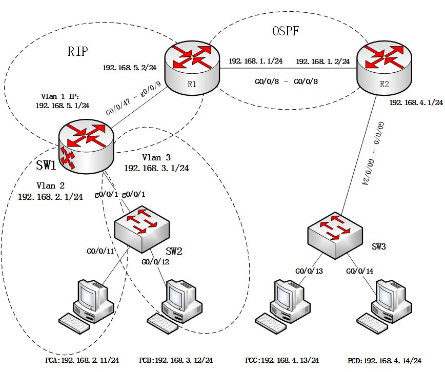

2. 组网排错
在完成本实验所有实验要求的情况下，实验分加0.5分（不会超过20分满分）。
在实际操作性配置中，往往会出现人为的疏忽、错误配置等种种问题造成网络不能正常通信。以下给出的网络不能全网互通，请对网络故障进行排查，恢复网络。
备注
如图所示，PCA 属于 VLAN2， PCB 属于 vlan3。SW1 和 R1 之间使用 rip 协议。 R1 和 R2 之间使用 ospf 协议，其中R1、R2属于Area0，R1和SW1属于Area1，R2和SW3属于Area2。
在准备实验前，请找实验老师导入设备的预配置！！！
配置OSPF（Open Shortest Path First）协议在路由器上并通过其网络涉及几个步骤。以下是一个基本的配置示例。
进入系统视图（如果尚未进入）
配置OSPF进程并指定路由器ID
1 ospf 1 router-id 192.168.1.1
在这里，ospf 1 是OSPF进程的ID，它是一个在1到65535之间的任意数字。router-id 命令用于设置OSPF路由器的唯一标识符，通常是一个IP地址。在这个例子中，我们使用了192.168.1.1作为路由器ID。
创建区域
1 area 0
在这个例子中，我们创建了Area 0。
配置要通告的网络和区域
1 network 192.168.1.0 0.0.0.255
这条命令告诉路由器在OSPF区域0中通告192.168.1.0/24网络。network 命令后面的IP地址和掩码应该匹配您要通告的网络。
退出系统视图
提示
ping—测试网络连通性
display interface—查看路由器的接口状态
display ip interface—查看接口与 IP 相关的信息
display ip interface brief—查看接口状态
display ip routing-table—查看路由表
display vlan—查看 vlan 信息
display port vlan—查看端口 vlan 信息
display current-configuration —查看运行的配置文件
2.1. 实验提交
请提交实验报告。
实验报告需要画出组网图，给出设计方案、操作步骤、配置命令、实验结果及分析。